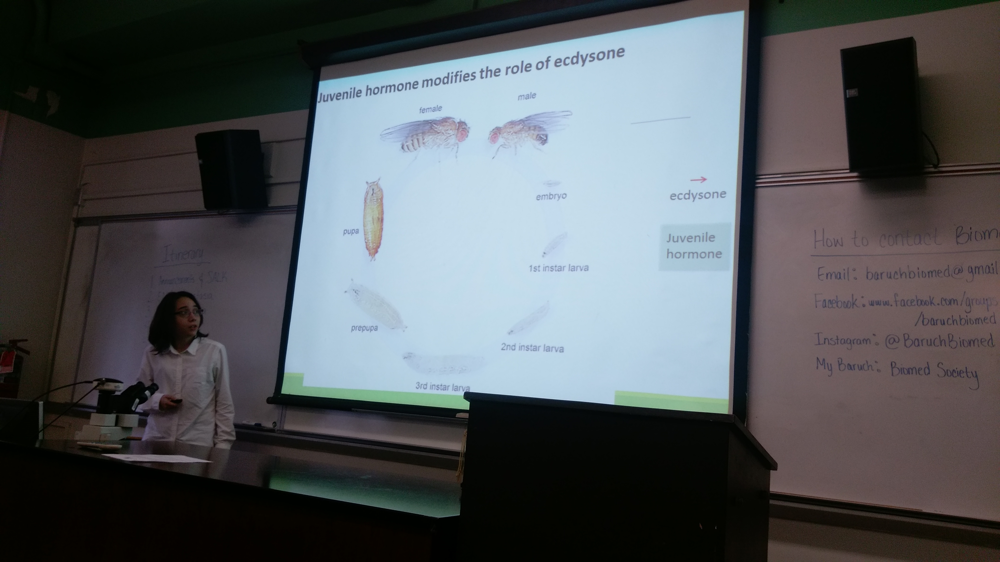
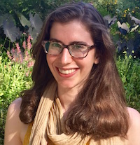
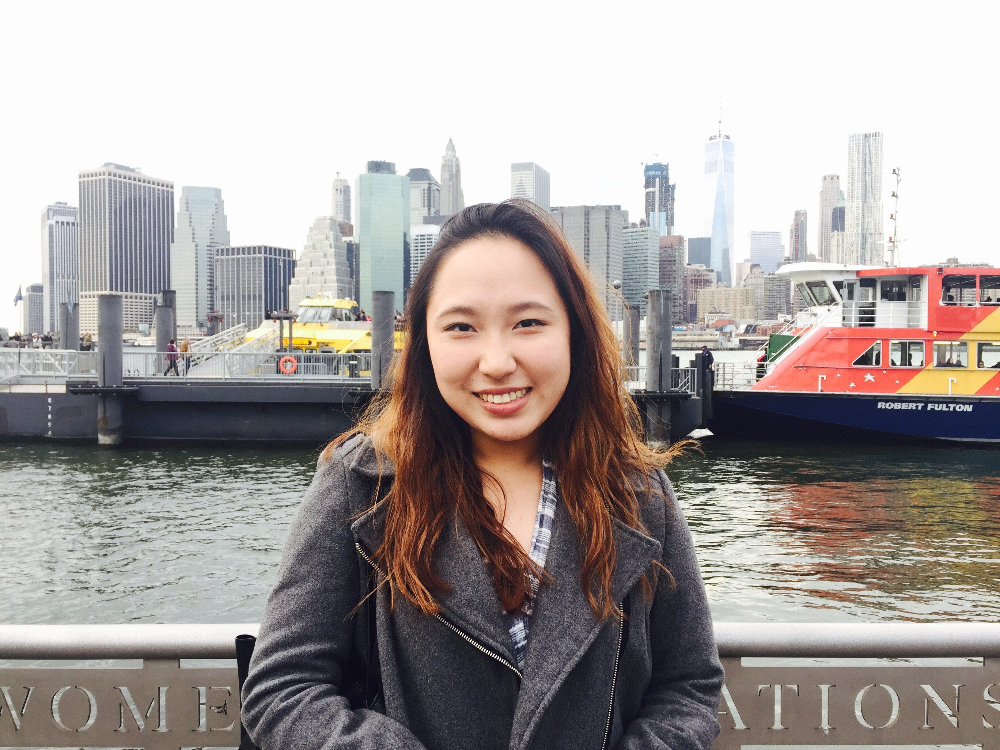

Prospective Undergraduate Research Assistants
Letter to Undergraduate Applicants
Dear Potential Undergraduate Researcher, Thank you for your interest in becoming involved in the research in the Reed Lab in the Department of Biological Sciences at the University of Alabama. I believe strongly that experience doing research is a critical component of young scientist’s development. As undergraduate students work in my lab, they are expected to contribute significantly to the intellectual content of their research projects and to ultimately earn authorship on peer-reviewed publications. This requires a significant commitment of time and enthusiasm to the lab group, the research, and to one’s own intellectual development. I am looking for intellectual enthusiasm and the potential to learn quickly rather than a specific skill set or knowledge base. Preference will be given to students early in their college careers. In each application round (see dates below), I will interview some applicants and then select a small number to join my lab group. I will conduct a similar application and interview process each semester for students starting in the lab the following semester, so students should wait to apply until they are ready to make the commitments listed below and can reapply in subsequent semesters if not selected in the first round. Thank you again for your interest and feel free to contact me with any questions. Sincerely, Laura Reed
Lab Alumni
Givenchy Ayisi-Boahene
Raquel Calero

Lady Cardenas

Shivani Daryani
Audrey Guarino
Harmeet Kaur

Morgan Magee
Carolyn McGrail

Sarah Minkyung Lee
Honors Thesis: Examining the roles of genetic and environmental factors in Drosophila melanogaster hematopoiesis and innate immune system
Genetics Society of America Travel Award
Ekaterina Migunova
Keerteshwrya Mishra
Stephanie Rene
Marium Sarder
Brandon Schiro
Brian Tang
Honors Thesis: Genetic Basis of Larval Crystal Cell Quantity Variation in the Drosophila Genetic Reference Panel (DGRP)Genetics Society of America Travel Award
Henry Wu

Emily Yeung
Useful links: More free website templates | Themes for WordPress | Variant Duo template page